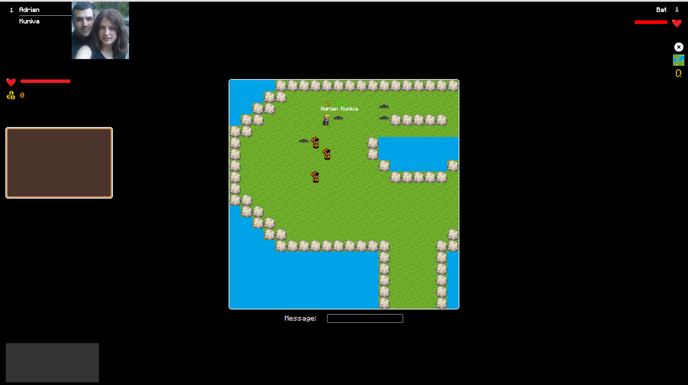

Social RPG User Guide
Social RPG is a role playing game which you can play if you login with a Facebook account.
The player can explore the game map, fight monsters and gain experience.
On the home page the user will be presented with our game's logo and a simple menu.
On the home page the user will be presented with our game's logo and a simple menu.
I. Front Page
The front page consists from a menu with 3 buttons:
Login - Use Facebook too log in to the game.
Tell a freind - Share on Facebook.
Exit - Logout from Facebook.
Login - Use Facebook too log in to the game.
Tell a freind - Share on Facebook.
Exit - Logout from Facebook.
II. Game Page
Once you've logged in with Facebook you can start playing the game.
The game page consists of the game window in the center of the screen, a chat box on the bottom-left part, an item box on the left-hand side and your name with the profile picture acquired from Facebook. Next to it there is your name and level.
Under it are the lifebar and your current gold status.
On the right-hand side there are three buttons for logging out (X), viewing the map and a quest log (Q).
Overview
The quest log displays information about your accepted quests (completed or in progress).
Pressing the map button will show you the entire map without the enemies, NPCs or other players.
To chat you can press Enter to bring up the chat dialog box and press Enter again to send the message.
You spawn next to 3 NPCs that offer quests.
Your character has a health pool (HP), and can earn experience by killing enemies and completing said quests.
Health can be replenished by using potions.
To move around the map, left click the place you want to go to.
Game Holder

Profile
Health and Gold

Item Box

Chat Messages Holder

Message Input

Right Menu

To interact with a NPC, left click on them, then choose wheter to accept the quest or not.
In order to fight an enemy you have to left click on them and let the battle play out. You can also run from the battle.
Killing enemies also has a chance to spawn an item (a potion or gold).
Other players can join the game. When this happens a message is displayed in the chat box.
View Map
NPC
Quest Acceptance
Quest List
Fight Enemy
